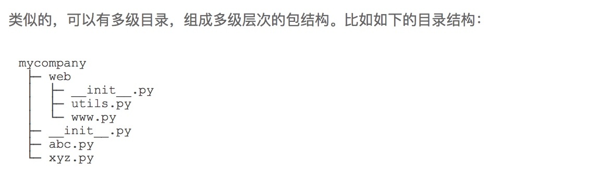

在python中一个.py文件就称为一个模块
使用模块不仅可以增加代码的维护性和复用性,还可以避免函数名和变量名冲突,相同名字的函数和变量可以存在不同模块中
为了避免模块名冲突,Python引入了按照目录组织模块的方法:包,只要我们的报名不与别人冲突,那么所有模块就不会冲突
每一个包目录下面都会有一个
__init__.py的文件，这个文件是必须存在的，否则，Python就把这个目录当成普通目录，而不是一个包。__init__.py可以是空文件，也可以有Python代码，因为__init__.py本身就是一个模块，而它的模块名就是mycompany。

- 文件www.py的模块名就是mycompany.web.www，两个文件utils.py的模块名分别是mycompany.utils和mycompany.web.utils。
- mycompany.web也是一个模块
使用模块
#!/usr/bin/env python3
# -*- coding: utf-8 -*-
"这是一个测试模块" #任何模块的第一个字符串都会被视为模块的注释
__author__="ACEfish"
import sys #导入模块
def test():
args = sys.argv #sys模块有一个argv变量，用list存储了命令行的所有参数
if len(args)==1:
print("只有一个参数",args[0])
elif len(args)==2:
print("两个参数",args[0],args[1])
else :
print("too many params!")
if __name__ == "__main__": #当我们在命令行执行该文件时，会把一个特殊变量__name__置为__main__,而如果在其他地方导入该hello模块时，if判断将失败因此，这种if测试可以让一个模块通过命令行运行时执行一些额外的代码，最常见的就是运行测试。
test()
else:
print("不执行测试模块")
当我们在命令行执行该文件时，会把一个特殊变量__name__置为__main__,而如果在其他地方导入该hello模块时，if判断将失败因此，这种if测试可以让一个模块通过命令行运行时执行一些额外的代码，最常见的就是运行测试。
作用域
python中并没有绝对的限制private函数或变量,因此：
- 正常的函数和变量名是公开的
- 类似
__xxx__是特殊变量，可以被直接引用，但是有特殊用途,例如:__author____name__ - 类似
_xxx或者__xxx是非公开的，不应该被引用
第三方模块
模块搜索路径
当我们试图加载一个模块时，Python会在指定的路径下搜索对应的.py文件，如果找不到，就会报错
默认情况下，Python解释器会搜索当前目录、所有已安装的内置模块和第三方模块，搜索路径存放在sys模块的path变量中：
import sys
sys.path
如果我们要添加自己的搜索目录，有两种方法：
- 直接修改
sys.path，添加要搜索的目录 - 设置环境变量
PYTHONPATH，该环境变量的内容会被自动添加到模块搜索路径中。设置方式与设置Path环境变量类似。注意只需要添加你自己的搜索路径，Python自己本身的搜索路径不受影响